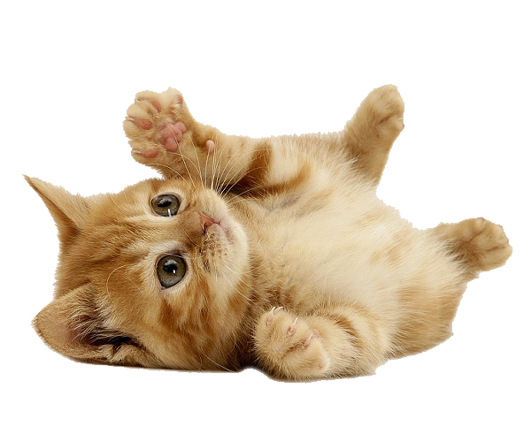

貓貓們的 Question and Answer
或許這兒能解答你心中的疑問
Q : 我想跟貓咪們互動，請問該怎麼做 ?
A : 最好的方式是先在離牠一段距離的地方坐下，再伸出食指指向貓咪，高度大約在牠的鼻子上方一點的地方，讓貓咪們知道你想跟牠接觸。當牠主動碰觸你的手指，就代表牠願意親近你啦 !
Q : 與貓咪互動的注意事項 ?
A : 1. 不要一直盯著貓咪的眼睛，這樣會讓牠有危機感。
2. 盡量避免在貓咪吃飯或是睡覺的時候打擾牠。
3. 不要給予牠過多的空間壓力。
4. 不可以快速地接近牠或是強行撫摸擁抱。
2. 盡量避免在貓咪吃飯或是睡覺的時候打擾牠。
3. 不要給予牠過多的空間壓力。
4. 不可以快速地接近牠或是強行撫摸擁抱。
Q : 我想養貓咪，請問有什麼需要注意的地方 ?
A : 首先，需要先帶貓咪去寵物醫院做身體檢查與打預防針的事項等等，確認貓咪的健康狀況，因為換環境這件事對貓咪來講會造成極大的心理壓力，從而導致身體的免疫力降低，容易感冒或拉肚子，而體內一些潛在的病毒也易於此時發作，因此在貓咪剛換環境的10天內，必須密切的注意貓咪的身體狀況。
在把貓咪帶回家之前，先買好貓咪的食物及用品。將一間小房間或是飼養鐵籠外面罩上布佈置成貓咪的房間，放好砂盆、食物碗、水碗、舒適的小貓床、貓抓板、玩具…等等；最好準備一個可以讓貓咪把自己”藏起來”的箱子或有屋頂的貓床。可能製造危險的物品都要收好，例如清潔劑、藥品、電線或可能吞入的小東西。
把貓咪帶回家後，因為貓咪對陌生的環境會緊張，所以不可以強制把貓咪從籠子裡抱出來，要耐心地等牠自己踏出第一步，等牠慢慢適應新環境後，就可以利用玩具與罐頭跟貓咪互動，或是靜靜地陪伴牠，開始建立起親近感。
請記住，要隨時注意貓咪的健康狀況與環境清潔，帶給貓咪一個良好的生活環境，才能讓貓咪感到幸福。
在把貓咪帶回家之前，先買好貓咪的食物及用品。將一間小房間或是飼養鐵籠外面罩上布佈置成貓咪的房間，放好砂盆、食物碗、水碗、舒適的小貓床、貓抓板、玩具…等等；最好準備一個可以讓貓咪把自己”藏起來”的箱子或有屋頂的貓床。可能製造危險的物品都要收好，例如清潔劑、藥品、電線或可能吞入的小東西。
把貓咪帶回家後，因為貓咪對陌生的環境會緊張，所以不可以強制把貓咪從籠子裡抱出來，要耐心地等牠自己踏出第一步，等牠慢慢適應新環境後，就可以利用玩具與罐頭跟貓咪互動，或是靜靜地陪伴牠，開始建立起親近感。
請記住，要隨時注意貓咪的健康狀況與環境清潔，帶給貓咪一個良好的生活環境，才能讓貓咪感到幸福。
Q : 貓咪可以吃什麼 ? 不能吃什麼 ? 飲食習慣 ?
A : 一般而言，建議給貓咪吃貓咪用乾飼料，罐頭食物則是作為獎勵用，不太建議每日食用。
貓咪不能吃的食物如下 : 魚骨頭、牛奶、巧克力、洋蔥與人的食物，請注意不要讓貓咪們吃到這些喔 !
貓咪的飲食習慣是細嚼慢嚥與少量多餐，因此每日提供新鮮的食物與乾淨的飲水是十分重要的。如貓咪遇上疾病或是特殊狀況，需食用處方飼料，請依照醫生只是來準備，務必多加留意貓咪的情況。
貓咪不能吃的食物如下 : 魚骨頭、牛奶、巧克力、洋蔥與人的食物，請注意不要讓貓咪們吃到這些喔 !
貓咪的飲食習慣是細嚼慢嚥與少量多餐，因此每日提供新鮮的食物與乾淨的飲水是十分重要的。如貓咪遇上疾病或是特殊狀況，需食用處方飼料，請依照醫生只是來準備，務必多加留意貓咪的情況。
還有其他的問題想問嗎?
你可以透過
這邊的資訊來聯絡我們
